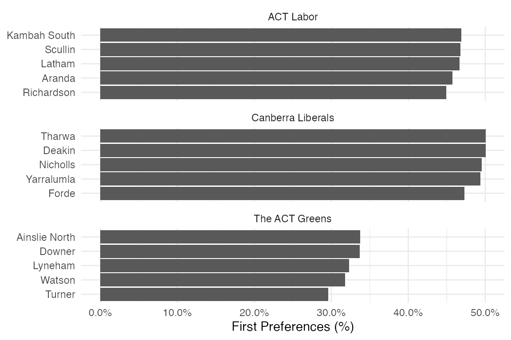

The below graph shows each of the three major parties’ strongest booths across the ACT:
library(dplyr)
#>
#> Attaching package: 'dplyr'
#> The following objects are masked from 'package:stats':
#>
#> filter, lag
#> The following objects are masked from 'package:base':
#>
#> intersect, setdiff, setequal, union
library(ggplot2)
act_fp_2020 %>%
inner_join(act_candidates_2020, by=c("candidate"="ballot_paper_name")) %>%
group_by(polling_place, party) %>%
summarise(votes = sum(votes)) %>%
add_tally(wt=votes) %>%
mutate(percent = votes/n) %>%
ungroup() %>%
filter(party %in% c('ACT Labor', 'Canberra Liberals', 'The ACT Greens')) %>%
group_by(party) %>%
top_n(5, wt=percent) %>%
mutate(polling_place = reorder(polling_place, percent)) %>%
ggplot(aes(x=polling_place, y=percent)) +
geom_col() +
facet_wrap(~party, scales='free_y', ncol=1) +
coord_flip() +
scale_y_continuous(labels=scales::percent_format()) +
labs(x=NULL, y='First Preferences (%)') +
theme_minimal()
#> `summarise()` regrouping output by 'polling_place' (override with `.groups` argument)
The act_polling_places_2020 object is an sf object which has spatial data for each of the polling places.
The below example is a simple leaflet::leaflet() map, with the size of the circles determined by the total number of votes cast.
You can do other analyses, including in ggplot2 with ggplot2::geom_sf()
library(sf)
#> Linking to GEOS 3.8.1, GDAL 3.1.1, PROJ 6.3.1
library(leaflet)
votes_by_polling_place <- act_fp_2020 %>%
group_by(polling_place) %>%
summarise(votes=sum(votes)) %>%
ungroup()
#> `summarise()` ungrouping output (override with `.groups` argument)
act_polling_places_2020 %>%
inner_join(votes_by_polling_place, by=c("Name"="polling_place")) %>%
leaflet() %>%
addTiles() %>%
addCircleMarkers(label = ~paste(Name, '- Votes:', votes), radius=~votes/100)